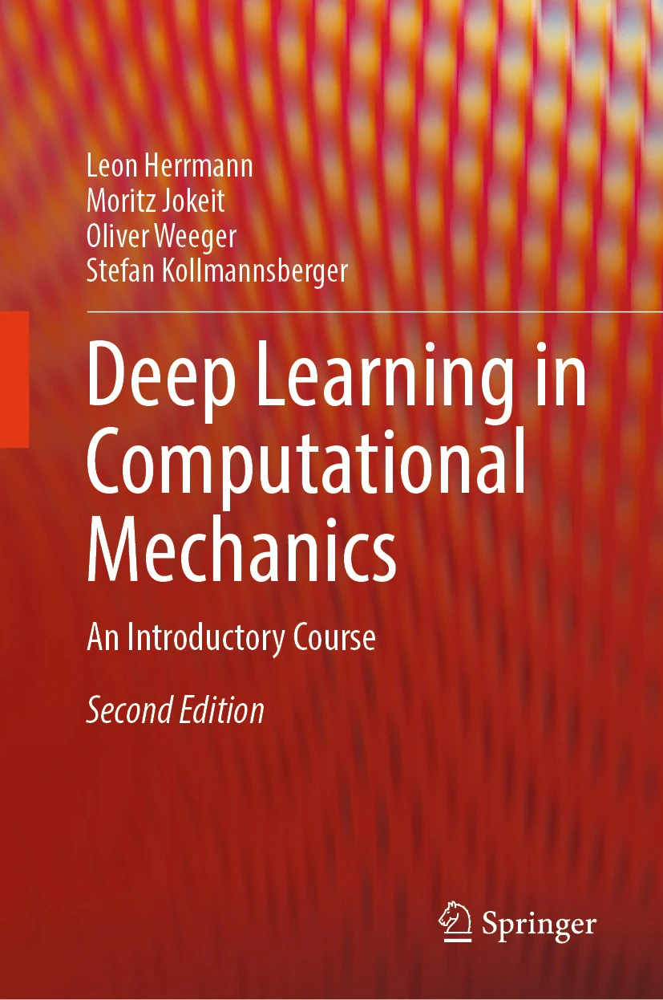

cuwave
Single-GPU differentiable higher-order finite difference wave propagation code.
Install it with pip install cuwave
We are the computational mechanics group at the Chair of Data Science in Civil Engineering, Bauhaus-Universität Weimar. We build numerical methods — and the code that runs them — for simulating and designing engineering structures.
Restores usable explicit time steps on badly cut cells by stabilizing the governing eigenvalues.
Derives the critical time step that explicit time integration must respect on immersed meshes.
Compares explicit and semi-explicit immersed schemes for transient wave problems.
A plastic damage model with mixed hardening that captures low-cycle fatigue in high-strength aluminum.
CodeRepresents localized failure through a strain discontinuity instead of a smeared damage band.
CodePredicts which damage mode wins as tunnel cracks and delamination compete in laminates.
Treats only the small cut cells implicitly, keeping the bulk of the mesh explicit and cheap.
Robust moment-fitting quadrature for cut cells of solids described by boundary meshes.
CodeSimulates seismic waves in half-spaces containing semi-infinite irregularities such as valleys.
Carries ductile damage through to crack closure and contact within a single formulation.
Recovers interior solution fields in the scaled boundary method without enlarging the global system.
Compares techniques that speed up the slow staggered iterations of phase-field fracture.
Extends the scaled boundary method to gradient elasticity, capturing dispersive waves in microstructured media.
Models rate-dependent cracking of concrete by combining viscoelasticity, viscoplasticity and anisotropic damage.
A phase-field model with separate tensile and shear cracks, calibrated against experiments on rock.
Predicts how the proximal humerus fractures using phase-field models.
The data structures and algorithms behind multi-level hp-refinement in any dimension.
Least-squares stabilized Nitsche boundary conditions for the finite cell method, with error and conditioning bounds.
Studies fiber bridging in polypropylene-reinforced concrete through experiments and simulations.
A cheap model for how cracking degrades laminate stiffness, without resolving every crack.
CodeComputes accurate reaction forces on trimmed, immersed meshes, where classic nodal methods fail.
A tailored 2D element that captures three-dimensional off-axis tunnel cracks.
CodeImposes boundary conditions directly on geometries that are given only as point clouds.
Quantifies how fiber arrangement at the microscale changes crack driving forces.
Benchmark problems in solid mechanics for comparing discretizations and implementations.
Local hierarchical refinement for isogeometric analysis of trimmed shells.
Resolves brittle phase-field cracks with multi-level hp-refinement on immersed meshes.
Robust iterative solvers that scale in parallel for large finite cell analyses.
Simulates directly on flawed CAD geometry, tolerating gaps and overlaps, with the finite cell method.
Multi-level Bézier extraction for hierarchical local refinement in isogeometric analysis.
Resolves material interfaces in complex geometry with the multi-level hp finite cell method, applied to biomechanics.
Integrates discontinuous functions in cut cells by combining moment fitting with smart octrees.
Analyzes constructive solid geometry models directly with the finite cell method, without meshing.
Integrates discontinuous functions accurately in 3D with octrees that follow the geometry.
Multi-level hp-refinement in 3D with arbitrary hanging nodes and dynamically changing meshes.
A simple treatment of hanging nodes in hp-finite elements.
High-order mesh adaptivity by superposing refinement levels, avoiding hanging-node constraints.
Subdivides cut elements robustly and accurately so that high-order immersed methods keep optimal convergence.
Simulates fiber bridging in mixed-mode crack propagation in composites with the extended finite element method.
Couples trimmed and non-conforming patches weakly, without penalty parameters or extra unknowns.
Models normal contact with high-order elements through a fictitious contact material.
FCMLab, an open MATLAB toolbox for finite cell research.
Connects geometric modeling, isogeometric analysis and the finite cell method.
Precomputes cell matrices so that voxel-based finite cell models are cheap to integrate.
Extends the finite cell method to linear thermoelasticity.
A high-order fictitious domain approach for thin-walled structures.
Interactive bone simulation, where results update while the user changes the model.
Couples Lattice Boltzmann flow with p-FEM structures for fluid–structure interaction on fixed grids.
Removes the memory wall of transient adjoints, putting billion-parameter designs on one GPU.
CodeReconstructs an effective transducer model from measured wavefields, without knowing the transducer's internals.
Compares total focusing, reverse time migration and full waveform inversion on the same ultrasonic data.
A scaled boundary formulation for inhomogeneous media that makes full waveform inversion highly parallel.
CodeOptimizes the shape of complex solids on a fixed grid, avoiding mesh distortion and re-meshing.
Compares ways of parametrizing an unknown boundary when inverting wave measurements.
Reconstructs geometry at several resolutions by combining splines with the finite cell method.
Images defects in components with vertical surfaces by reverse time migration on point-cloud geometry.
Links the scanned as-built surface of arc-deposited steel directly to its fatigue life.
Designs the beam profile itself so that the melt pool follows a prescribed temperature field.
Follows shotcrete 3D printing of a multi-storey building section from digital design to full-scale fabrication.
Asks how much of the printed outcome a purely thermal model can actually predict.
Measures how well thermal simulations match thermography, using statistical similarity tests.
Predicts the fatigue life of printed lattices from CT scans, using the finite cell method and strain energy density.
DataTests thermal models against bead-on-plate experiments across a range of beam shapes.
Optimizes the laser intensity distribution to improve melt pool geometry.
Condenses complex printed 3D nodes into beam models so that entire space frames can be designed and analyzed.
Resolves the moving heat source by refining in space and time at once.
Optimizes the cellular interior of printed lightweight concrete walls for insulation, validated by measurements.
Compares modeling options for the bending of printed octet-truss lattices, validated by experiments.
Characterizes the tensile behavior of printed octet-truss lattices from CT images, validated by experiments.
Quantifies how microstructural variability in printed lattices propagates to their mechanical behavior.
A part-scale thermomechanical model of laser powder bed fusion, validated against experiments.
Characterizes the material behavior of complex printed microarchitectures from CT images.
Compares laser scan speed and power strategies by the residual stresses they leave behind.
Reviews additive manufacturing processes, applications and digital planning methods in construction.
Predicts melt pool shapes in laser powder bed fusion with a nonlinear heat equation that includes phase changes.
A hierarchical model for moving heat sources and phase changes in selective laser melting.
Designs printed fiber networks that reinforce hydrogels for cartilage tissue engineering.
Combines 3D-printed fibers and polymer networks into strong, stretchable engineered tissues.
Learns on the mesh graph to invert wave measurements for unknown material fields.
CodeReplaces the return-mapping step of plasticity with small, reliable learned surrogates.
CodeReuses networks trained on earlier reconstructions to shorten new inversions.
CodeA methodological survey of where deep learning has, and has not, proven useful in mechanics.
Uses a neural reparametrization of the design field to escape poor local optima.
CodeFlags anomalous prints and tracks properties from process data using a GAN.
DataDiscovers neural reparametrizations for regularization in inverse problems.
Reconstructs defects in bonded multi-layer composites from ultrasonic signals with a fully convolutional network.
Single-GPU differentiable higher-order finite difference wave propagation code.
Install it with pip install cuwave

Exercises and reference implementations accompanying our introductory course and textbook on deep learning for mechanics.
Efficient multi-level hp- and other finite element methods in arbitrary dimensions.
Install it with pip install mlhp
A collection of machine learning enhanced physics solvers and optimizers, answering when and where deep learning is useful in numerical simulation.
Convenient thermomechanical simulation of powder bed fusion additive manufacturing processes.
Install it with pip install pbf
The research areas above list our journal articles from the last five years, together with our most-cited earlier work. The complete list is maintained on the chair's publication page.